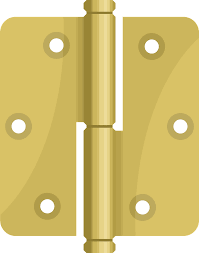
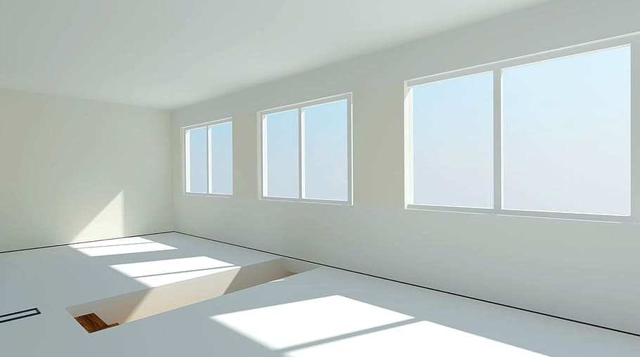
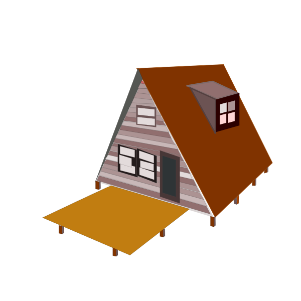

Architecture

Architecture is the art or science of building. specifically : the art or practice of designing and building structures and especially habitable ones. : formation or construction resulting from or as if from a conscious act.
Part A
Architecture is a topic I used for my freedom blog website. There are different forms of architecture software and hardware. Software architecture is about designing structures and models using websites to design their buildings. Hardware Architecture is when architects use materials to operate and build certain parts of a building or house. For example, when they are bulding a door for a house, it usually requires materials like levers, mortise of cylindrical lock sets, hinges, weatherstripping, astragals, and closers. Architects uses software websites like Rhino 3d, Revit Architecture, and sketchup to create and model their building to plan their building or house.


Context
This website is about how Aframe could impact future architecture. Aframe is a website where you design 3d models using codes. Aframe is a perfect example of making buildings and architecture using codes from customizing shapes. This could help the real world by putting architecture into software engineering. For example, when someone wants to use codes for designing and making a 3d project, they could use Aframe learn how to use it, and create any design og buildings they like. This is also helpful, because it could lead into good ideas for future architects, because they could make a website like this, however with more variety, options, and shapes.
Aframe Models
I made a background image realistic by searching up an image I want to put in Aframe codes by selecting tools, clicking on usage rights and click creative commons lincense and selct any image I like, download it and put it in my sep10-freedom project repo and use a code with src and type in the name of the imag with jpg to get the image.
Part B
Architects over the years has build amazing and different types of buildings. Many Architects have different unique ideas for the future of Architecture. For examples, many architects use computers and technology to model their buildings and use them as tools. Aframe is a tool I used for my future idea on Architecture. My idea for the future of architecture is to have a house that is shaped like a triangle. The name of this is called an Aframe house.
